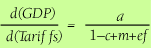
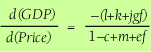

Algebra in Causal Graphs
 We have seen how to make simple qualitative inferences from a causal graph that only incorporates the signs of the arcs: i.e. whether the direct effect of one variable on another is positive or negative. For example, an increase in net exports directly increases GDP.
We have seen how to make simple qualitative inferences from a causal graph that only incorporates the signs of the arcs: i.e. whether the direct effect of one variable on another is positive or negative. For example, an increase in net exports directly increases GDP.
Now we go further and put into the model the extent to which an increase in one variable directly affects another, e.g. the effect on GDP of a unit increase in net exports, holding everything else constant. Of course for these particular variables there is a one-for-one effect because the foreign balance (net exports) is a component of total expenditure (GDP). So the coefficient shown on that particular arc is simply equal to one. The reverse effect, of a unit change in GDP on net exports, is equal to —m where m stands for the marginal propensity to import. If units of measurement are defined such that both the initial price level and the initial money stock equal 1 then the coefficients h and j can also be set equal to one.
The causal graph now has an algebraic coefficient attached to each arc, and we proceed by assuming that all these effects are constant, which implies that the system is linear. If we are unwilling to believe that the whole model is linear we can still treat the causal graph as a local linear approximation.
Now we can use the graph to find the algebraic effect of an increased tariff on GDP (or indeed any other overall effect we might be interested in). There are two ways of doing so. One is to manipulate the graph by removing nodes and then absorbing the resulting self-loops on the variables in a systematic manner. The other is to use a formula known as "Mason's rule", and that is the approach we adopt here.
Each overall "transmittance" from an exogenous variable to an endogenous variable involves: (i) finding all the paths connecting the two variables and the "path transmittance" of each, which is simply the product of all the simple arc transmittances along the path, and (ii) finding all the loops in the graph and noting (a) whether they touch any of the paths we have found, and (b) whether the loops themselves touch, i.e. have nodes in common. For each loop we shall also need the "loop transmittance", which is the product of all arcs in the loop. Obviously these steps can be carried out by simple inspection of the graph.
Now to the formula. Mason's rule is this:
T = (∆1 T1 + ∆2 T2 …)/∆
It involves the following terms:
T is the overall transmittance we seek;
∆ is the "system determinant", made up of loop transmittances;
Ti is the direct transmittance of the ith path;
∆i is the "cofactor" of the ith path, made up of loop transmittances.
The system determinant is given by:
∆ = 1 —(L1+ L2+…) + (LkLl+…)non-touching pairs —(LkLlLm+…)non-touching triples…+ etc
where Lj is the jth loop transmittance.
The ith path cofactor ∆i is the value of ∆ in which any loop term that touches the ith path is set equal to zero.
This may seem complicated, but it truly isn't. Let's see how to implement it for the effect of an increased tariff on GDP in our model.
The system determinant for this model is ∆ = 1 — c + m + ef . There is just one path from tariffs to GDP with transmittance T1 = a, and since all three loops touch that path, the path cofactor ∆1 = 1. Hence the effect of a unit increase in tariffs on GDP is:

Similarly we can use the formula to get the effect of an increased price level on GDP:

where the denominator is the same system determinant as for all such calculations, and the numerator is the simple sum of the three path transmittances since all three loops touch each path.
© 2005 by Geoffrey J. Wyatt